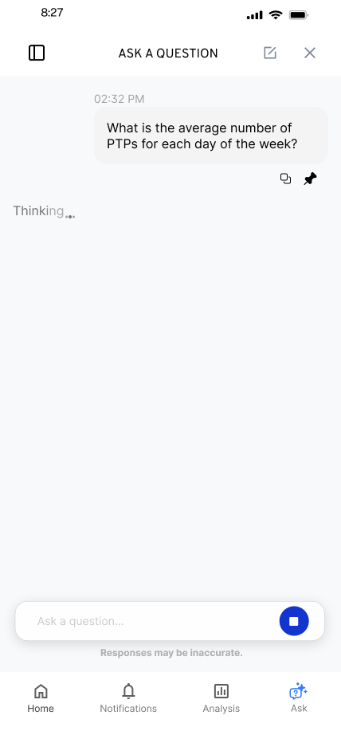
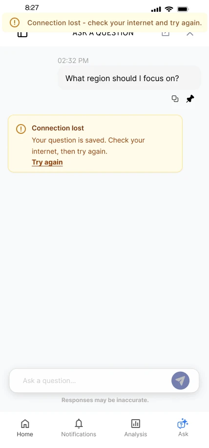

FactorLab · SmartTagIt / CONVERSATIONAL AI · MOBILE + WEB
Give an AI conversation a way forward.
Designing Flint’s first question, waiting states, and recovery so the conversation holds together when a response stalls or the connection drops.
6 min read


- The task
- Ask a question about safety activity, inspect the answer, and keep going when the response is interrupted.
- My contribution
- Mobile and desktop conversation flows, question entry, saved questions, recovery messages, and annotated Figma handoff.
- Where it landed
- Design alternatives and engineering handoff, including the March 27, 2026 error-state walkthrough.
THE CONTEXT
A useful answer starts before the answer appears.
Flint sits inside SmartTagIt, where a question can start with a practical decision: which region should I focus on, or which project needs my attention? Those are examples from the design screens. The interface had to make that kind of question approachable, then support the conversation through loading, follow-ups, and interruptions.
The product context and constraints
I was working within an existing product. In the early flow, I kept the answer's information hierarchy close to what was already there and concentrated on the surrounding interactions. I explored how people would find a starting question, return to a question they had saved, and recognize what they could do when an answer stopped.
The work moved through defined phases. After reviewing the suggestions, pinned questions, and header with the product lead, I had reached the current phase's scope limit. I kept the agreed back action, deferred broader header exploration, and organized the key screens by use case in a dedicated Figma handoff file. Later walkthroughs added annotations and alternatives for engineering.
Constraints that shaped the work
- An existing answer layout and product navigation had to remain part of the experience.
- Loading animation depended on technical constraints; the visual exploration did not establish live system progress telemetry.
- The phase scope limited further header and suggestion refinement; some alternatives remained for team selection.
MY CONTRIBUTION & COLLABORATION
I developed the flows, states, UX copy, and Figma organization. The product lead helped narrow the direction and scope; engineering received annotated alternatives. The archive does not identify which of every proposed action or visual variant became the released behavior.
DECISION 01
Let people recognize a useful question, then make it their own.
The starting screen offered practical prompts alongside the input. In my walkthrough, selecting a suggestion filled the question field. That made the suggestion a starting point people could inspect and edit.

Alternatives and constraints
- Alternatives
- I explored different treatments for the suggestions, access to a larger question library, and access to pinned questions. The library was a separate flow, so the first screen did not need to carry every possible question.
- Constraints and tradeoffs
- The same question can depend on earlier context. In the pinned-question flow, I explored asking whether to include the previous conversation context, with an alternative that let people edit the question to supply the context they wanted. That choice was still optional in the design review.
Evidence behind this account
Original entry and pinned-question screens, plus walkthroughs 1, 2, and 4, establish the proposed interactions. They do not establish which approach users preferred or how conversation context was implemented.
DECISION 02
Keep the request visible while the answer is forming.
The conversation needed an in-progress state between submitting the question and receiving an answer. I explored a sequence of loading visuals within the conversation, alongside a way to stop the response.

Alternatives and constraints
- Alternatives
- The walkthrough describes animation between states, with the exact treatment dependent on technical constraints. The still screens document those visual options; they are not evidence that the interface could report a particular stage of the underlying AI process.
- Constraints and tradeoffs
- Keeping the answer layout familiar focused the iteration on what happens before and around the answer. The final animation and timing needed to be worked through with engineering.
Evidence behind this account
The archive supports the loading-state designs and the technical constraint. It contains no measured response-time study or observed comparison of waiting treatments.
DECISION 03
Decide what remains before deciding what the button says.
The March 27 handoff separated conditions that could otherwise collapse into one error. Losing the connection, stopping before an answer appears, and stopping after part of an answer is visible leave people in different situations.

Alternatives and constraints
- Alternatives
- Retry the saved question after a connection loss; ask again when a response has not completed; or offer Ask Again and Continue when a partial answer may be incomplete. The walkthrough also covers opening the question area while already offline.
- Constraints and tradeoffs
- Recovery could not stop at the first failure message. I specified that retrying while still offline should produce a banner. Submitting a newly typed question was another route out of the connection-loss message. The design therefore had to cover the next attempted action as well as the original failure.
Evidence behind this account
The dated walkthrough explains the messages, actions, and Figma location for engineering. It does not verify client-side persistence, restored connectivity, or the released behavior of Continue.
| Situation | Design response | Work stage |
|---|---|---|
| Connection lost after asking | Tell the person the question is saved and offer Try Again. | Proposed recovery behavior |
| Try Again while still offline | Show a banner so the retry does not appear to do nothing. | Specified follow-on state |
| Response stops before completion | Offer Ask Again. | Design variant |
| A partial answer is visible | Make incompleteness explicit; offer Ask Again or Continue. | Design variant |
| Question area opened while offline | Explain the connection problem before a question is submitted. | Separate initial state |
How the work developed
Initial conversation exploration
Explored suggestion chips, loading visuals, answer actions, follow-ups, and error variants.
Phase 3 handoff and Phase 4 saved questions
Organized key screens in a dedicated Figma file, added engineering annotations, and explored the pinned-question and question-library flows.
Recovery-state handoff
Walked the team through connection loss, retry while offline, interrupted answers, and opening the question area without internet.
OUTCOME & REFLECTION
A connected handoff, from first question to recovery.
I brought the entry, waiting, saved-question, and recovery flows together in an annotated handoff for engineering. The mobile and desktop designs made each state and its next action explicit.
The useful unit of design was the state and the next action.
Working through recovery made the gaps in the conversation easier to discuss. A button labeled Continue carries an expectation about the partial answer; a message saying the question is saved carries an expectation about persistence. My next pass would make those expectations explicit in a shared state table before polishing more variants.
The next question I would test
Walk people through a lost connection and a partial answer. Ask what they believe has been kept, what each action will do, and whether they can recover without unnecessarily rewriting the question.
Original Figma exports and project walkthroughs, including the March 27, 2026 error-state handoff. Screens show design variants with sample content; release of individual variants is unverified.
KEEP EXPLORING